Manseell GitHub WebPage
Hola, sono uno studente della magistrale di Data Engineering and Artificial Intelligence all'Università Federico II di Napoli. Ho svolto diversi progetti legati al mondo sia del Machine Learning che del Deep Learning, così come a quello degli LLM.
Inoltre, sono stato membro per 3 anni e mezzo della Junior Enterprise JEF Napoli, nel settore IT, ricoprendo anche il ruolo di Project Manager; tale esperienza mi ha specializzato nella creazione di siti web tramite Wordpress e nell'utilizzo di Photoshop (una delle mie piu' grandi passioni).
Infine, ho avuto la fortuna di aver frequentato per 6 mesi nella mia vita un'universita' estera tramite il progetto Erasmus
Background scolastico

Universita' degli Studi di Napoli Federico II (2023-)
Laurea Magistrale in Data Engineering and Artificial Intelligence
Universitat Rovira i Virgili (2024)
Progetto Erasmus+ in Computer Securety Engineering and Artificial Intelligence
Universita' degli Studi di Napoli Federico II (2019-2023)
Laurea Triennale in Ingegneria Informatica
Liceo Classico Adolfo Pansini (2014-2019)
Diploma di Maturita' Classica
Progetti

QuitSmokingSOS
E' un chatbot LLM che utilizza un modello RAG, in modo tale da eseguire molteplici compiti che vertono sullo smettere di fumare.
Il vantaggio principale di tale chatbot e' che può essere usato sia dai pazienti che dagli esperti, senza pero' andare a sostituire il ruolo di
quest'ultimi. Il modello RAG permette agli utenti di caricare qualsiasi file a loro scelta, in modo tale da avere un'assistenza dettagliata e
personalizzata
Link GitHub
LinkedIn
FNS